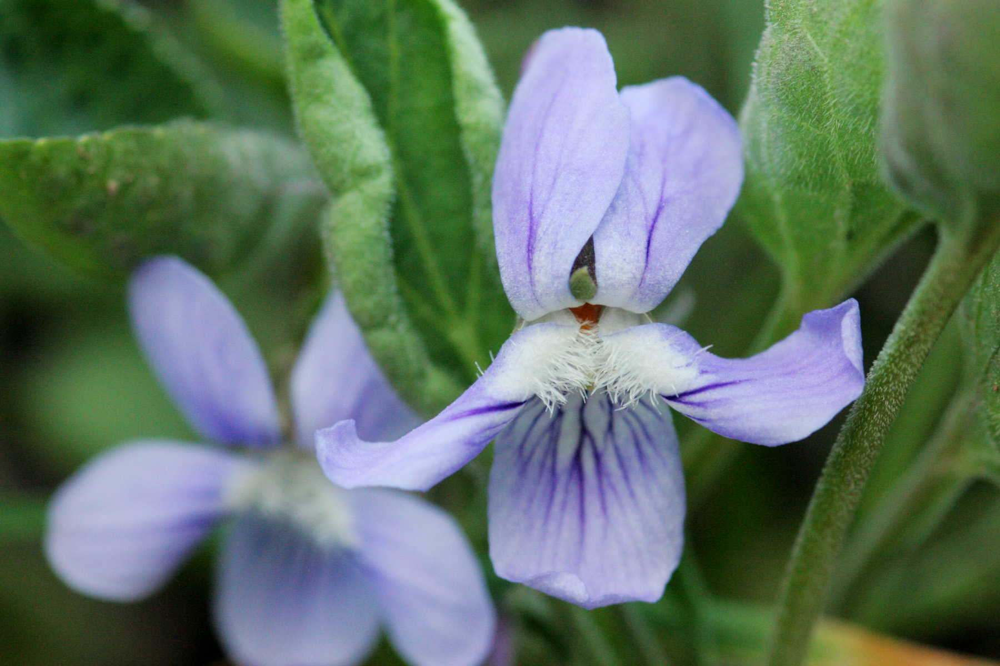

Violet

Photo by: Cecelia Alexander
Viola adunca

Photo by: Sheri Hagwood
Viola nuttallii
There are 16 varieties of violets native to Washington State.
- Scientific Name: Viola adunca
- Other Names: Early blue (hook) violet
- Scientific Name: Viola canadensis
- Other Names: Canadian violet and Rugose violet
- Scientific Name: Viola flettii
- Other Names: Olympic violet
- Scientific Name: Viola glabella
- Other Names: Pioneer violet and Stream violet
- Scientific Name: Viola howellii
- Other Names: Howell’s violet
- Scientific Name: Viola langsdorffii
- Other Names: Alaska violet and Aleutian violet
- Scientific Name: Viola macloskeyi
- Other Names: Small white violet
- Scientific Name: Viola nephrophylla
- Other Names: LeConte violet and Northern bog violet
- Scientific Name: Viola nuttallii var. praemorsa
- Other Names: Canary Violet and Upland yellow violet
- Scientific Name: Viola orbiculate
- Other Names: Darkwoods violet and Roundleaf violet
- Scientific Name: Viola purpurea
- Other Names: Goosefoot violet
- Scientific Name: Viola renifolia
- Other Names: Kidney-leaf white violet
- Scientific Name: Viola sempervirens
- Other Names: Evergreen violet and Redwood violet
- Scientific Name: Viola sheltonii
- Other Names: Fan violet and Shelton’s violet
- Scientific Name: Viola sororia
- Other Names: Northern blue violet and Northern woodland violet
- Scientific Name: Viola trinervata
- Other Names: Sagebrush violet
- Description: The flowers have five petals. Some flowers have small hairs on the two side petals. The lower petals create a pouch. The flowers can be white, purple/deep blue, yellow, or bicolor. The leaves are deep green and glossy.
- Distribution: The plant grows throughout North America.
- Habitat: Forest floors, wooded areas, damp meadows, and along stream banks.